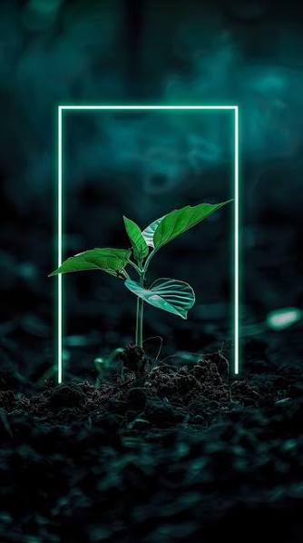

I am a computer science student currently studying at Loughborough University. My growth and journey towards where I am today and where I will be in the future is one of simple beginnings. I initially was introduced into the field like most via computer science lessons in the primary school. During this time, I greatly enjoyed these lessons, bringing something fresh and unique to the school curriculum. This attitude persisted for quite a long time, finding pleasure in the lessons I had but never a real fascination in the subject and never bothering to explore the science deeper. After my GCSEs was the real turning point; I was stuck not really knowing what I was truly passionate about rather going through the motions of what others encouraged me to do. Thus, during the summer I spent my time having various experiences and trying everything I could. Eventually, through some trial and error I landed on trying out programming. I began watching videos and researching; I felt myself truly having fun and I felt a level of curiosity I previously never noticed. This turning point decision, beyond just showing me what I was passionate about taught me that interest cannot be taught and if you want to truly find what you enjoy you must seek it out yourself.

My time studying computer science during A level and univeristy only helped expand my interest in the subject and as my knowledge grew my desire to learn increased. I began reading books, watching videos and podcasts on the subject; channels like veritasium taught me a great deal on how various complex new technologies were developed and how they work. Furthermore, being surrounded by peers with a similar goal and ambition helped teach me the value of being part of a team and community and how important it is to push your fellow peer forward with you, whether it be in the classroom or workforce. A-Levels also challenged me in the subject a great degree, pushing me to grow more than ever before and showing me that ambition and desire must be backed by effort if I am to ever grow in the field.
In addition, much of my growth was attributed to non computing activities. For example, sports and fitness. I found both helped develop my abilities to work as a team and how to empathise and connect with people vastly different from myself. Subsequently, this helped me fit into a communicty of people of a variety of interests and aspirations. Furthermore, fitness not only helped show me the importance of being mindful about your health but also the pain and difficulty I must face to acheive my goals teaching me discipline. To add to this having a routine to stick to helped greatly to structure my life and help keep me productive. Other activities like cooking were also a great way for me get creative while helping me be more independant. All in all this shown me that growth and life as a whole in not linear and for me to be the best version of myself I must find my own path to get there.